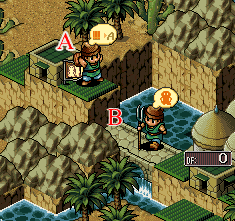

| 概要 | 情報 | ステージ攻略 |
| 地図 | テクニック | モナモナ攻略へ |
|
1つの家だけを使い短期間にユニット数だけを増やす 体重が200g 以上のユニットが家を作ると、DFが100の家が完成します。ここで、税金が十分に低ければ3日程度で新しいユニットが誕生します。 この方法を利用すれば、短期間に体重が100g のユニットを大量に用意できます。弱いユニットばかりだから、使い道が無いかと思うかもしれませんが、意外なときに使えるかもしれません。 応用で体重が2000g を越えたユニットを減量させることも可能です。 |
|
王様に指示 王様にも指示が出せます。「オート」が通常状態で、「待機」だと城が破壊されていても修理しません。使い道は・・・特になさそうです。 |
|
串刺しの刑 落ちてくるユニットの落下地点に柵を置いておくと、そのユニットは着地した瞬間死亡します。使う場所は限られていますが、覚えておくと便利です。 (ぎゃー!!) |
|
作りかけならば橋を架けられる 下の画像を見てください。 A地点にいるユニットは、Bの位置に橋を新規で作ることはできませんが、作りかけ橋を作ることは可能です。  |
|
橋を利用した移動と攻撃 ユニットを橋の上に待機させ、別のユニットに橋を破壊するように指示を出します。橋を壊したとき、橋の上にいたユニットは下に落ちます。これを利用して通常では移動できない場所へ移動することができます。 もし落下位置に足場がなかったり、川などユニットが侵入できない地形に落ちるとそのユニットは死亡します。これを利用すれば、敵のユニットをわずかな兵力だけで撃破できるのですが、狙ってユニットを落とし倒したという話を聞いたこともありませんし、管理人も挑戦しましたがタイミングがシビアすぎて成功したこともありません。 しかし、偶然成功し敵のＬユニットを倒し、劇的な逆転をしたという人を一人だけ知っていますので、不可能な技という訳ではなさそうです。 |
| 概要 | 情報 | ステージ攻略 |
| 地図 | テクニック | モナモナ攻略へ |